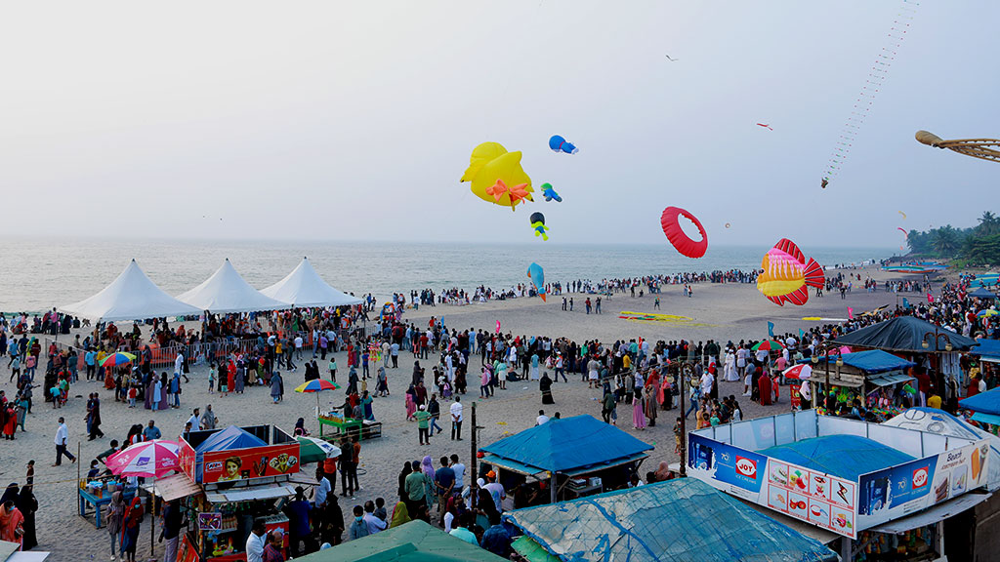
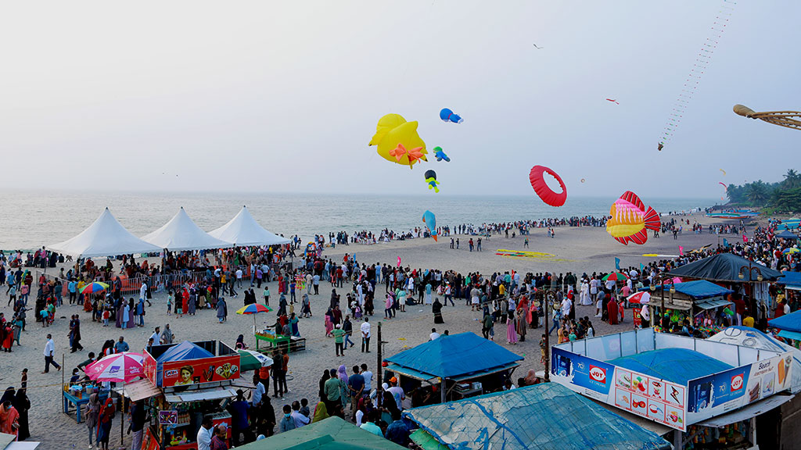
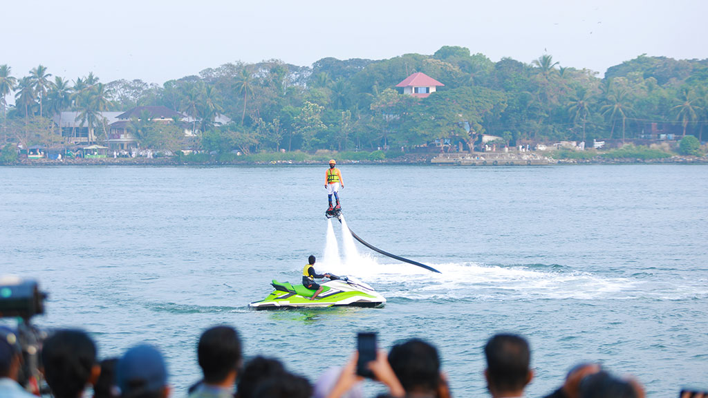
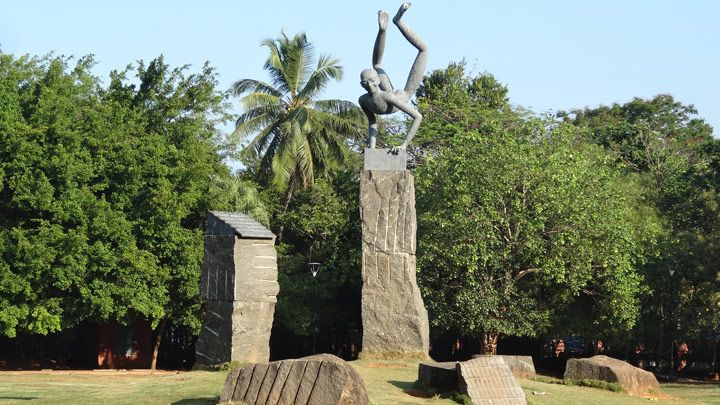
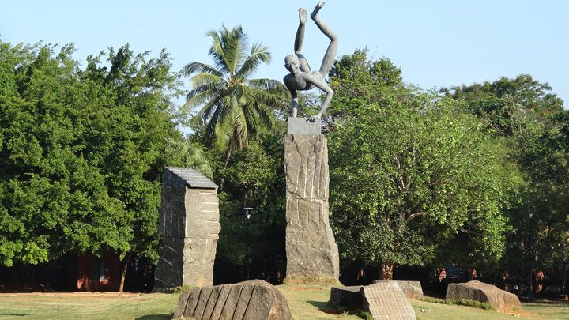
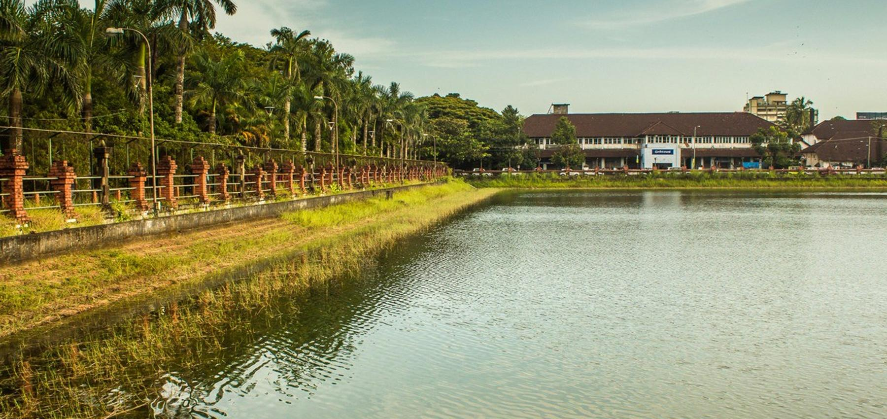
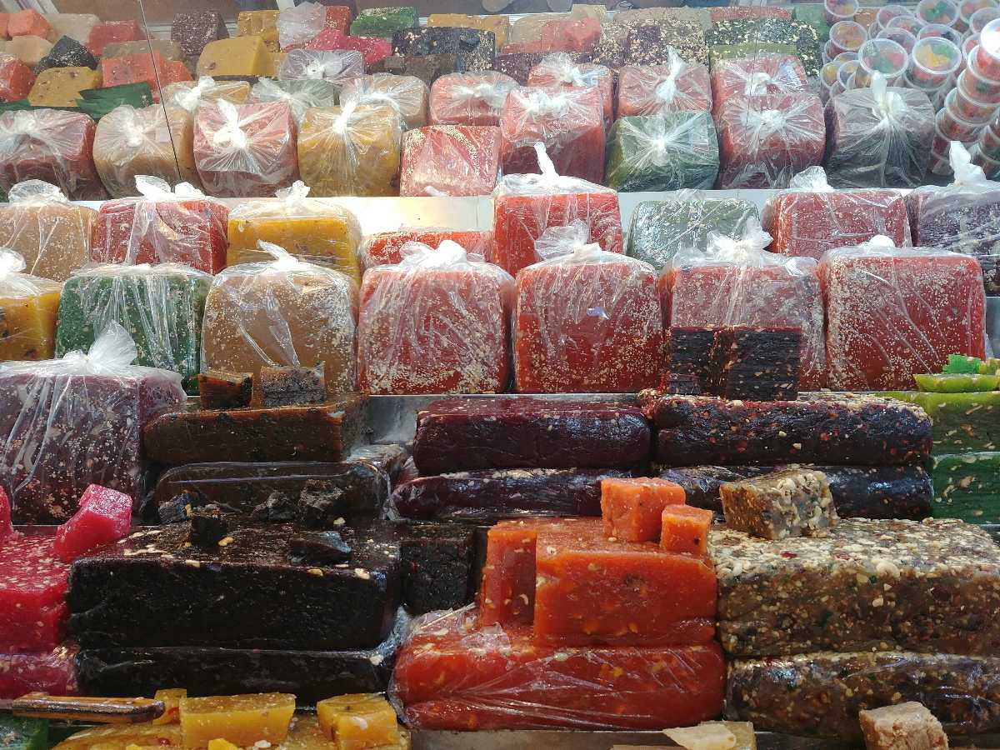
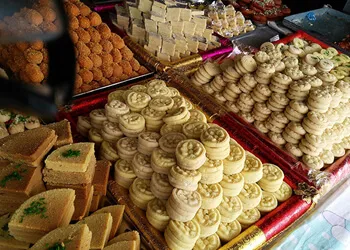
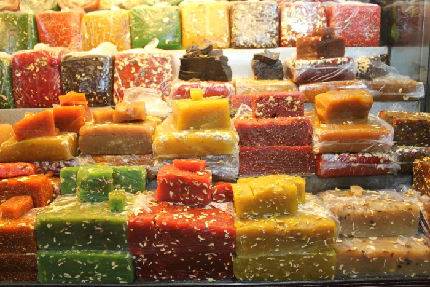

KOZHIKODE - A colonial city of trade and tourism
1. BEYPORE
 
 For over 1500 years, Beypore has serviced traders from across the world as a ship building paradise. To this day, tales of the past are widespread as to how this town’s ship building expertise has helped foster trade between Kerala and the world. Among the places in Kozhikode that were visited by the Arabs, Chinese and the Europeans, Beypore stands proud as a craftsman’s paradise, a place where the old ethos of shipbuilding are still carefully nurtured.
It's time to soak in the festive mood at Beypore, a land where the old ethos of shipbuilding is still carefully nurtured.
The Kerala government has decided to organise the ‘Beypore Water Fest’ in Kozhikode district from December 26- 29, 2021. Diverse water sports and entertainment events will be arranged.
Kayaking, canoeing, water polo, parasailing, speed boat racing, water skiing, powerboat racing, yacht racing, wooden log racing and timber rafting etc will be conducted as part of the fiesta.

Uru or the Arabian transportation vessel is the main lure here. The ship building yard is famous for the work ethic passed on to each of its employees over the ages. While most modern iterations rely on blueprints and technology, these unique individuals rely on intuition. Their intrinsic ability to conceptualise the final product is magical to view in person and their discipline while doing the same is legendary. While in the area, one can stroll towards the nearby fishing harbour or pop over to the popular haunt of migratory birds, the Kadalundi Bird Sanctuary. This quaint town will never bore you; its traditions are woven deep into its fabric and can be experienced by all who choose to make the journey.
2. MANANCHIRA SQUARE
 
 At the heart of Kozhikode city is every urban dweller’s paradise. A picturesque park with beautiful lawns, a musical fountain, traditional Kerala-style buildings and the nearby Kozhikode Public Library make Mananchira Square among the most visited spots in the area. One must also never forget the Mananchira Tank that surrounds it, preserved in its original form since the time of the last Zamorin ruler who built it, Manavikrama. Go for picnics, strolls or just a glimpse of the cultural heritage of a city, situated at its very centre.
Mananchira Square in Kozhikode is a paradise for nature lovers and for someone who is in search of a place to spend leisure time.
Surrounded by greenery from all sides, Mananchira Square is very well maintained for the comfort of the visitors. There is also a Mananchira tank around which this square is surrounded. The Mananchira tank is about a square kilometer in area and is man-made pond which was built by Zamorin Mana Vikrama in the 14th century. The history of Mananchira Square dates back to 1994 when it was constructed around the Mananchira tank. The tank was used as a water supply system and it is still being used for the same. Mananchira Square’s name has been inspired by the lake which is located in the center of the city called Mananchira and the lake in turn has been named after Manadevan Sampothiri who was the ruler of Kozhikode kingdom.

3. MITTAYI THERUVU
  Sweet Meat Street or Mithai Theruvu (in Malayalam) is a well popular location in Kozhikode district. As it is located in the mesial of the traditional city of Calicut, SM street is not only a sweat meat street for but the business hub of Kozhikode city. The destination was entitled from times when the street was lined with sweet meat (Halwa). Mittai Theruvu now got a new facelift, the newly renovated street was opened to the public on December 2017. To control the crowd, vehicles are not allowed to enter the street.
The narrow street embraced with a row of shops as cheek to jowl on either side is now haunt for locals and tourists alike. The place is now felicitous for all kinds of textiles, sweets, and confectioneries at cheap prices. Halwa of Kozhikode (Kozhikodan halwa) is renowned worldwide, which hasten the admiration of the street. even foreigners are very fond of Kozhikkodan Halwa, which is available in a wide variety of flavors and colors in the street. Mittai Theruvu is thus a distinctive shopping destination and a bustling marketplace for all classes of people. The diversity in availability makes the place as busiest streets of all time in the entire district.
The street is said to be more than 600 years old. One of the notable facets of Mittai Theruvu is its crowd. To control this, vehicles are not allowed to enter the street in peak hours. The diversity in availability and reasonable price are the crowd pullers of prestigious SM Street. Alike the popularity of Halwa, the stores of Sweat Meat Street are spots for famed banana chips of different flavors. If you are bewildered to choose from the flavors, you can get assorted flavors of those from there, which helps you taste different flavors.

Statue of the renowned poet and writer S.K.Pottekkatt is at facing the SN street at its entrance. His eminent travelogue Oru Theruvinte Katha is based on this street. More than those coming to shop, several are visiting here to explore the colorful experience of Mittai Theruvu. It is a utility market and a very crowded street for shopping, having all the stuff (clothes/souvenirs/spices, etc) for tourist and residents alike.